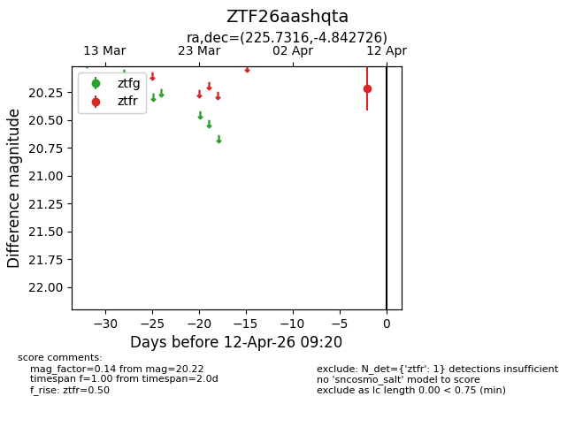
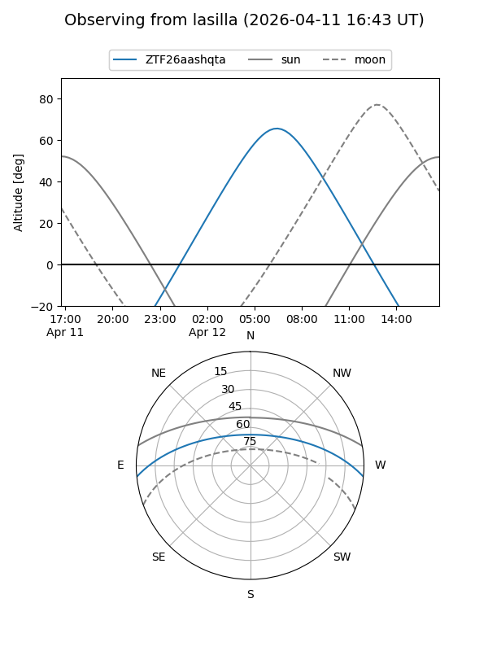
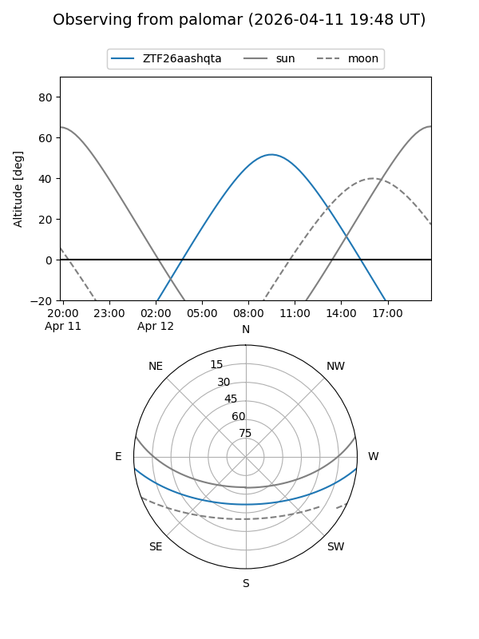

ZTF26aashqta
Target ZTF26aashqta at 2026-04-12 09:29
Aliases and brokers:
FINK: link
Lasair: link
ALeRCE: link
alt names
ZTF26aashqta (ztf,fink_ztf)
Coordinates:
equatorial (ra, dec) = 225.7316,-4.84273
equatorial (HMS+DMS) = 15:02:55.58,-04:50:33.81
galactic (l, b) = (352.7502,+44.93661)
Flags:
Photometry:
last ztfr=20.22
1 ztfr detections
Lightcurve

Visibility


Additional plots